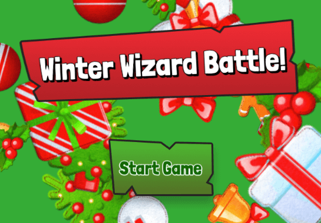
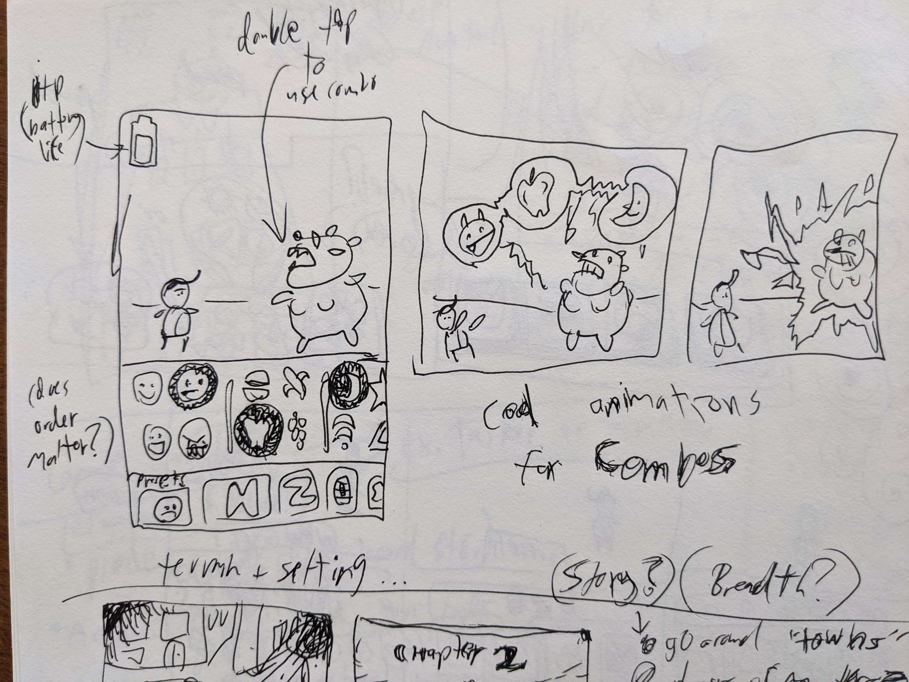
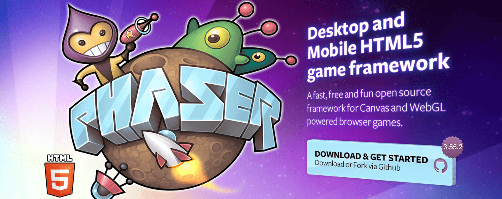
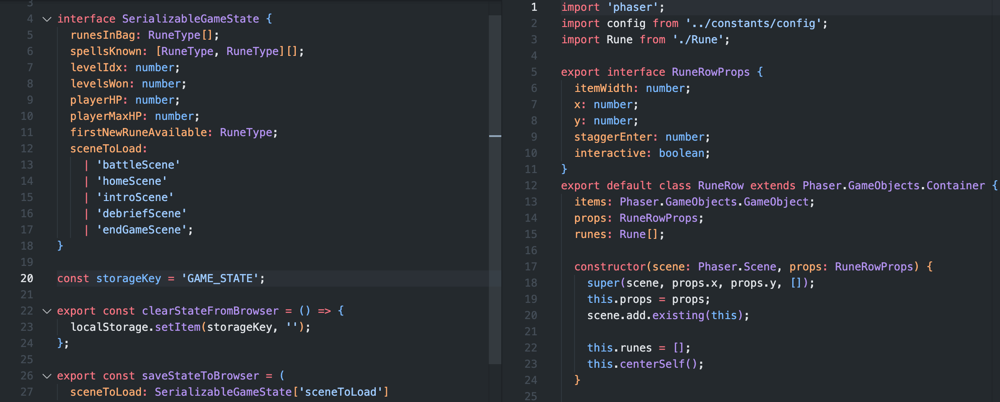

Game / Strategy
Winter Wizard Battle
Combine runes to cast spells in the strategy prototype that led to Spelly Forest.

Project overview
In winter 2020, I built a Phaser prototype to test whether discovering spells by combining runes could sustain a strategy game.
The response from friends and family encouraged me to develop the rune-combination mechanic further in Spelly Forest.
Tools Phaser, Typescript, VS Code, Itch.io asset store
Prototyping

- The holiday theme gave the game a clear visual direction and a deadline: I wanted people to play it while it was still winter.
- I used off-the-shelf art and left audio outside the scope so I could focus on implementing and tuning the spell system.
- I shipped the prototype in just over a month and shared it with friends and family.
Game Design

- The core dynamic I wanted to explore was "making combinations of basic elements to cast spells". I was inspired by the spell system in Eternal Darkness, where you have the freedom to just try new combinations (which might accidentally summon zombies). I also loved the cooking system in Breath of the Wild, the sense of discovery and total freedom that went along with it.
- My original idea from years ago involved casting spells by combining different emojis. With a winter theme, the specific emojis (I started calling them "Runes") were very predetermined: tree, gift box, star, etcetera.
- The most challenging yet fun part of the design was deciding what "flavor" each combination of runes had, and what the effects of that spell should be:

- I limited the number of rune types to 6, since that generates 21 two-rune combos.
- The design shifted from an RPG toward roguelike deck-building as I took inspiration from Slay the Spire’s progression.
- After each battle, players chose a rune and learned a spell combination, shaping the options they would have in the next fight.
- Enemies gained health and damage as players progressed. A run ended when the player fell or cleared the last encounter.
Building with Phaser

- Phaser let me bring my web development experience into game development. I could get the first scene running quickly and build from there.
- Working in Phaser gave me a foundation in game engines that I carried into Unity when I built Spelly Forest.
Static Typing

- I defined TypeScript types for game state, event payloads, and save data so the compiler could catch mismatches as the prototype evolved.